Triangular Automata
Package Demonstration
This is a non-interactive version of a Mathematica notebook that demonstrates how to use the functions of the Triangular Automata package to compute and display cellular automata in an infinite triangular grid.
Download the notebook: https://github.com/paulcousin/triangular-automata-mathematica
More information: https://paulcousin.github.io/triangular-automata
Paul Cousin
https://orcid.org/0000-0002-3866-7615
Introduction
Triangular Automata (TA) is a short name for cellular automata in a triangular grid. This package allows you to experiment with TA in a simple and efficient way.
Setup
Run the following command to import the package and you should be good to go.
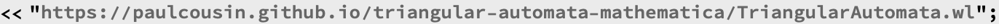
Rules
In this package, only a subset of possible TA called Elementary Triangular Automata (ETA) is considered.
The restrictions are:
binary states: 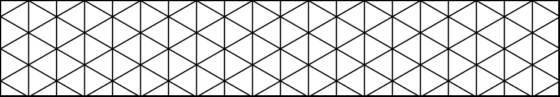
only the first neighborhood is taken into account
orientation of the neighbors is not considered
This means that there are only 8 possible local configurations. They can be plotted with TAConfigurationPlot.
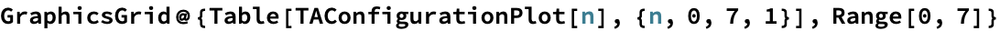
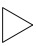
A rule must the specify for every configuration, if the cell is going to be dead or alive at t+1. There are thus only 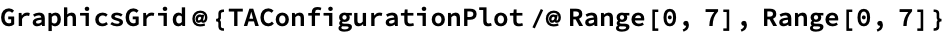 rules. These rules can be indexed by a unique rule number n in the Wolfram Code style.
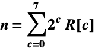
Rules can be plotted with the TARulePlot function.
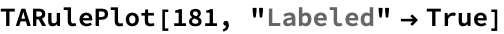
| 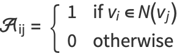 |
The “Labeled” option adds the rule number in base 10 and in base 2 as a title. We can see that the behavior of the rule is capture in its binary digits. Starting from the right, they indicate the future state for each configuration as they have been ordered previously.
Starting Points
Grids have a special format. They are captured in a list with three elements: a precursor of the adjacency matrix, a state vector and a coordinates vector. The first two are in the SparseArray format.
To simplify things, this package provides few starting points ready to use:
TAStartOneAlive: a grid with only one alive cell at the center
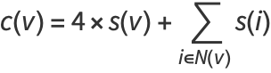
TAStartLogo: a grid with a logo that contains all 8 local configurations.
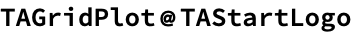
TAStartRandom[n]: a grid with cells randomly alive or dead on n layers.
Evolution
We can now evolve these grids with different rules. The simplest function to do so is TAEvolve. Let’s use it to evolve TAStartOneAlive with rule 181.
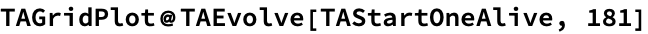
As expected from the earlier plot of rule 181, the environment has become alive and we have three dead cells surrounding a central alive cell. It would be nice to see what will happen after that. The function TANestEvolve can be used to jump ahead several time steps. Let’s look at what TAStartOneAlive will look like after 64 time steps of evolution with rule 181.
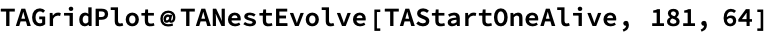
With this function, all the intermediate steps are lost and we only get the last grid. TANestListEvolve returns a list with all the intermediate steps.
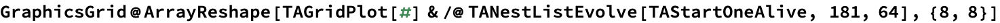
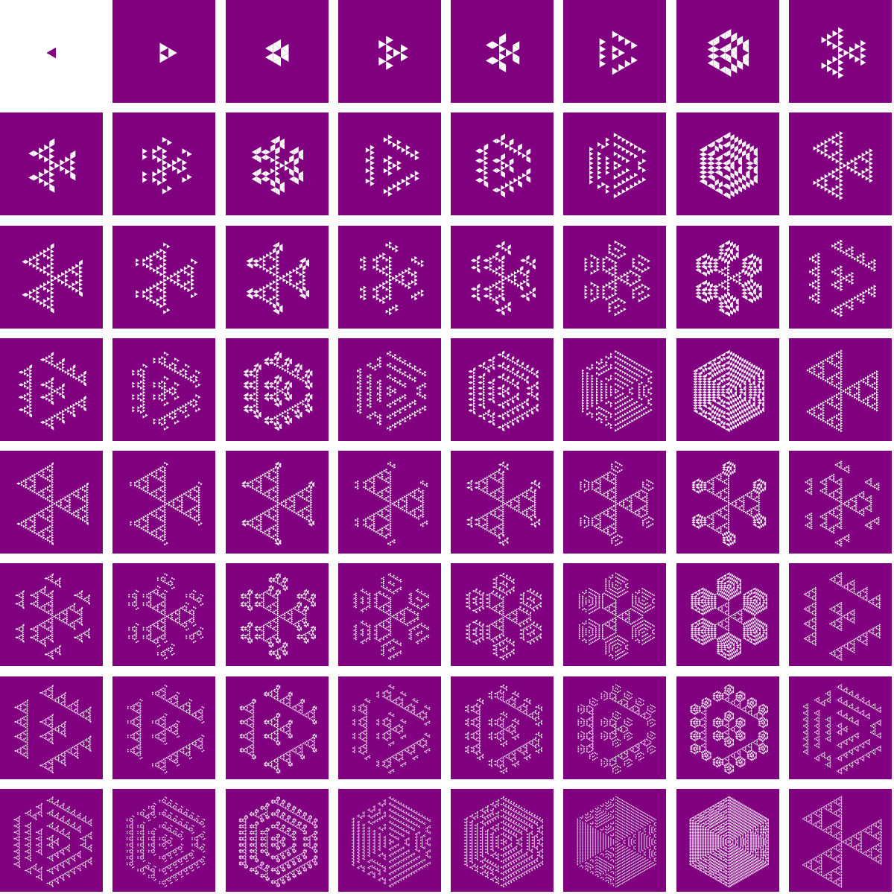
TAEvolutionPlot shows an animated version of what we have just computed.
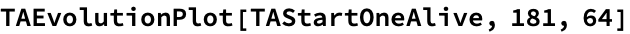
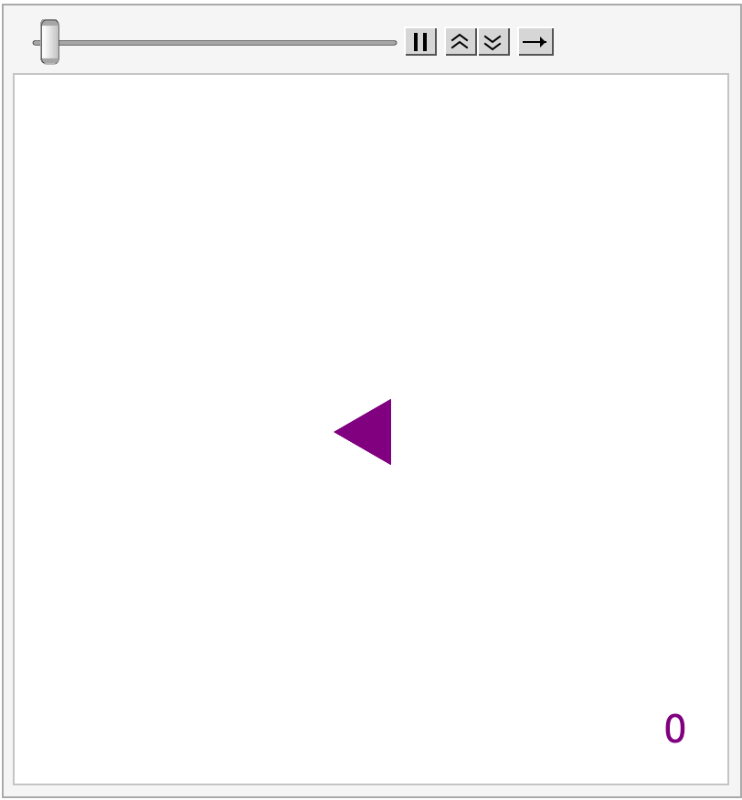
Like with Wolfram’s Elementary Automata, the grid evolution can be plotted all at once. But since each instant takes place in a 2D space, seeing the evolution in a single plot requires 3 dimensions. This plot can be computed with TAEvolutionPlot3D. You can rotate it (in Mathematica) to see what it looks like from different angles.
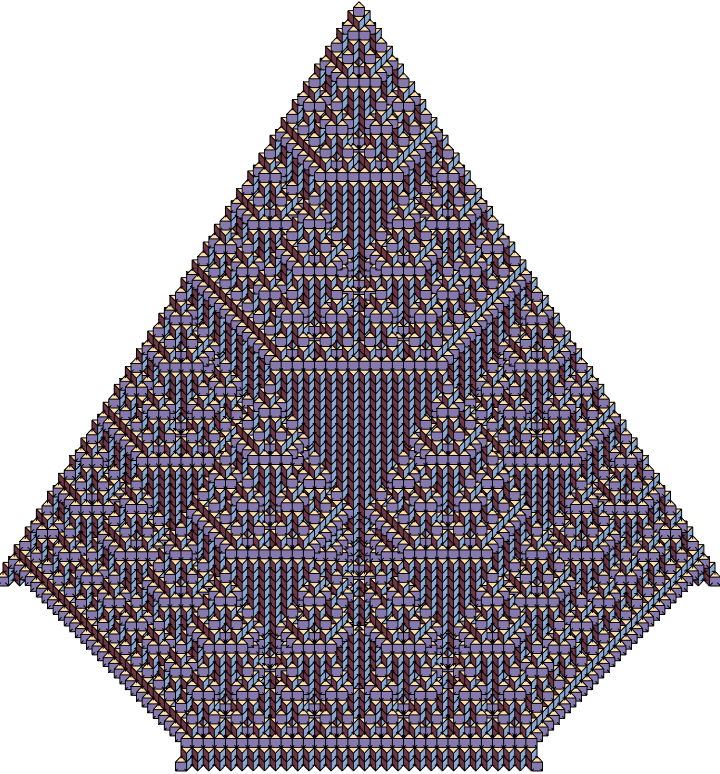
Negative
Two functions can help work in the negative world, where states are swapped.
TANegativeGrid returns the negative of a grid
TANegativeRule returns the number of the rule that will have the same effect but in the negative world
You will thus obtain the same result by first evolving a grid and then computing its negative:
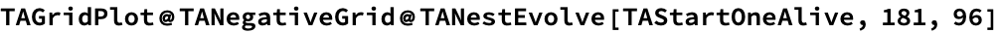
Or by first computing its negative, then evolving it with the negative rule:
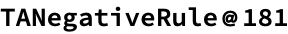
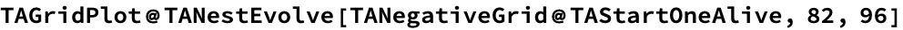
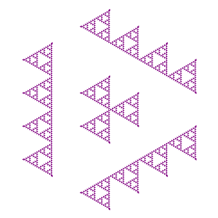
Conclusion
I hope you will enjoy this package. Share what interesting things you find with it!